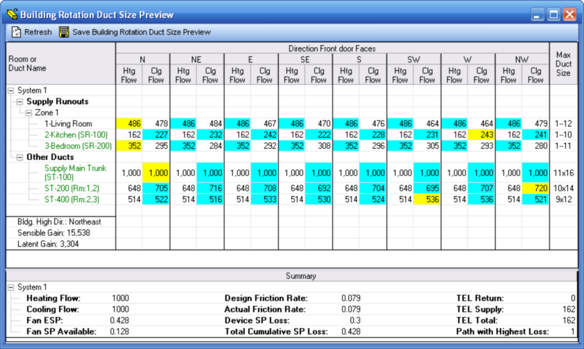

Building Rotation Duct Size Preview (Project Menu) |
  
|
Building Rotation Duct Size Preview (Project Menu) |
|
Icon: . Keyboard Shortcut: ALT, P, Z
Opens the Building Rotation Duct Size Preview window, which shows you the duct sizes for each duct in the project for each of the eight possible degrees of rotation of the building.

Refresh: Regenerates the report. Use this button if you make changes in the data on other windows in the project while this window remains open.
Save Building Rotation Duct Size Preview: Lets you save the grid as a Microsoft Excel file (XLS) or a comma delimited text file (CSV). Prompts you for a filename for the main grid and for the Summary section.
Room Name Color Codes:
·Black text: Data is from Rhvac's built-in runout or main trunk duct sizing.
·Blue text: Data is from one or more ducts defined on the drawing with graphic Manual D Ductsize.
·Green text: Data is from a duct defined on the Manual D Duct Sizer window.
Airflow Color Codes:
Cyan background: Selected airflow for the indicated direction of rotation, either the heating or cooling airflow.
Yellow background: Highest selected airflow value of all rotation directions. This value is used to generate the sizes shown in the Max Duct Size column.
Summary
Items in the Summary section are defined below.
Heating Flow: The airflow in the duct system during the heating season.
Cooling Flow: The airflow in the duct system during the cooling season.
Fan ESP: The external static pressure of the system fan not including any loss due to the air handling equipment. For a duct system entered on the Manual D Duct Sizer window this value can be entered in the ESP input near the top of the window. For a duct system entered with graphic Manual D Ductsize this value can be entered on the Fan Equipment Static Pressure Data dialog that is opened by clicking the button beside the Fan Available Static Pressure property of the Supply Main Trunk object. If not entered in either place this value is back calculated from the losses in the duct system and represents the required fan external static pressure.
Fan SP Available: The available static pressure of the system fan after accounting for any static pressure losses due to the air handling equipment. For a duct system entered on the Manual D Duct Sizer window this value is equal to the value entered in the ESP input near the top of the window minus the value entered for any "Misc" type items that you entered in the worst case path or its upstream paths. For a duct system entered with graphic Manual D Ductsize this value equals the value entered for Fan External Static Pressure on the Fan Equipment Static Pressure Data dialog (as described under Fan ESP, above) minus the device pressure losses entered on that dialog. If a fan external static pressure has not been entered this value is back calculated from the losses that occur in the duct system and represents the required fan available static pressure.
Design Friction Rate: The design overall friction rate per 100 feet, defined by the fan available static pressure times 100 divided by the overall total effective length (TEL Total, described below).
Actual Friction Rate: The actual friction rate per 100 feet, defined by the duct and fitting static pressure losses in the system times 100 divided by the overall total effective length (TEL Total, described below).
Device SP Loss: The static pressure loss that occurs within the air handling equipment. For a duct system entered on the Manual D Duct Sizer window this value is equal to the sum of any "Misc" type items that you entered in the worst case path or its upstream paths. For a duct system entered with graphic Manual D Ductsize this value equals the sum of the values entered under Device Pressure Losses on the Fan Equipment Static Pressure Data dialog (as described under Fan ESP, above).
Total Cumulative SP Loss: The total static pressure losses in the system, including duct and fitting losses and device pressure losses.
TEL Return: The Total Effective Length of the return system only, if present. Includes the lengths of the ducts along the route with the highest loss plus the equivalent lengths of all the fittings along that route.
TEL Supply: The Total Effective Length of the supply system only. Includes the lengths of the ducts along the route with the highest loss plus the equivalent lengths of all the fittings along that route.
TEL Total: Sum of TEL Return and TEL Supply, described above.
Return Loss Added to Supply: Only shown if the duct system was entered using graphic Manual D Ductsize. Indicates the amount of static pressure loss from the return duct system that was added to the cumulative static pressure loss of the supply side.
Path with Highest Loss: Only shown if the duct system was entered using the Manual D Duct Sizer window. Indicates the path number of the path belonging to the current system with the highest cumulative static pressure loss.